Walk the viewer, then run a live search
Everything M0–M2 built is visible in the viewer at localhost:8083. This page walks through it screen
by screen with real screenshots taken today, and the panel below opens any finance question in the live viewer so you can
watch all four retrieval stages run.
Run a question through every stage
checking the viewer on localhost:8083…
Finance only: it's the one dataset with both indexes built. A question nobody has run before takes about a minute at depth 20 (the reranker reads each new page in ≈3.2 s); after that it's cached and instant. If the viewer was restarted, the first visual search also loads EVIE (≈30 s). It opens in a new tab because this review page runs in a sandbox that would block the viewer's own API calls inside a frame.
Every screen, in the order you'd use it
Each stop has the screenshot, what each part means, one thing to try, and where it lives in the code. The "open live" links go to the same screen in the running viewer.
What the project is, and where it stands
- The five English corpora as cards: questions, pages, documents, and "answerable blind" (how often a model answers with no documents at all — high means the dataset tests memory, not retrieval).
- The milestone table. I updated it today: M1 done, M2 in review (it still said M2 "designed").
- The badge top right, "read only · no Claude": nothing in M0–M2 calls a model you pay for.
Built in frontend/src/pages/Overview.tsx; numbers from /api/datasets.
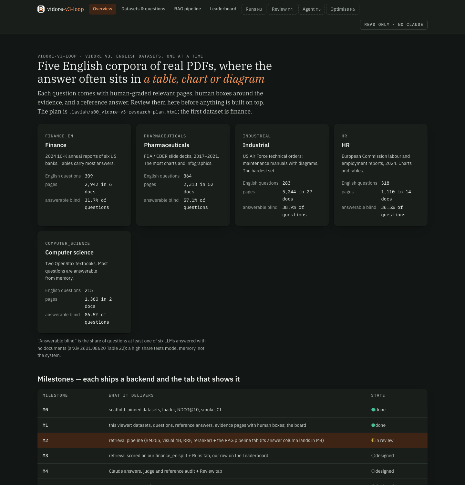
Pick a corpus
/datasetsopen live ↗- One row per English dataset, with the pinned revision each is loaded at: the numbers can't drift if the Hub dataset changes.
- The footer names the licences of the page images (SEC and FDA filings are public domain, the rest CC BY 4.0 or distribution A).
Built in pages/Datasets.tsx (Datasets); revisions in src/vidore_loop/data/registry.py.
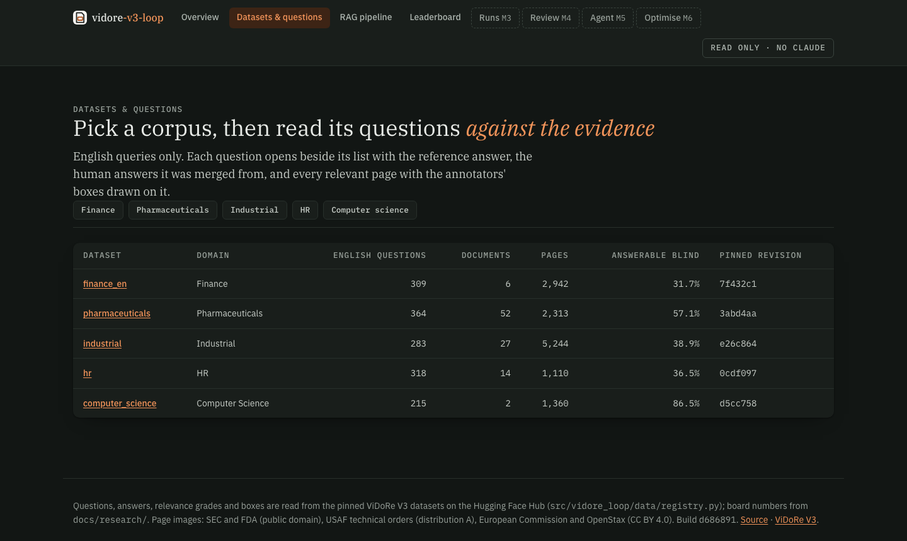
Filter 309 finance questions
/datasets/finance_enopen live ↗- Four summary cards: questions (215 written by people, 94 synthetic), relevant pages per question, documents, and how many references have been hand-checked.
- Filters on the left: search text or a query id, type (extractive, numerical, multi-hop…), content (Table, Chart, Text…), format, author, and hand check.
- Every row shows its type, content and how many pages answer it.
Try: content = Chart (20 questions), then press j / k to step through them without the mouse.
Built in pages/Datasets.tsx (Dataset) and lib/filter.ts (unit-tested).
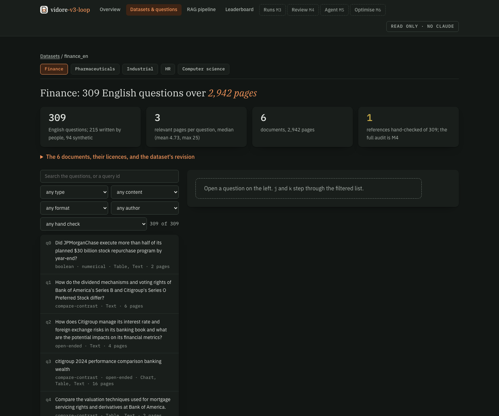
The question, its answer, and the evidence pages
/datasets/finance_en/181open live ↗- The question with its tags, and the reference answer plus the human answer(s) it was merged from.
- Hand check: my own check of the reference against the page. Here it holds; two of the five demo references I checked were wrong (pharma q313, hr q189).
- Evidence: every relevant page, graded full · 2 (holds the whole answer) or part · 1. Each opens large with the annotators' boxes drawn on it; OCR text shows the page's text as the keyword channel reads it.
- Run retrieval on this question → jumps to the RAG pipeline tab with this question loaded.
Built in pages/Datasets.tsx and lib/page.tsx (PageView: image, SVG boxes, OCR toggle).
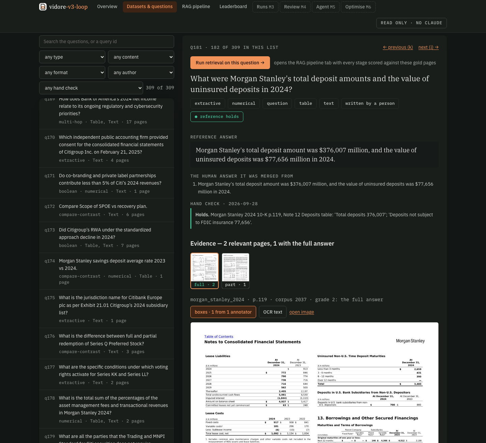
One question, four stages, scored against the gold pages
/pipeline?dataset=finance_en&qid=181open live ↗- The status line: text index ● · visual index ● EVIE-4.5B · 2,942 pages · reranker ready. Green means complete; it said "(partial)" until this morning.
- The four stages, each a toggle: A · text (BM25 keyword search on the OCR text) · B · visual (EVIE reads the page image) · C · fused (the two lists merged by rank) · D · reranked (zerank-2 rereads the top of the fused list).
- Rerank the top 10, 20 or 50 pages: deeper is slower the first time and can rescue pages fusion pushed down.
- The URL holds the question, so every run is a link you can share or bookmark.
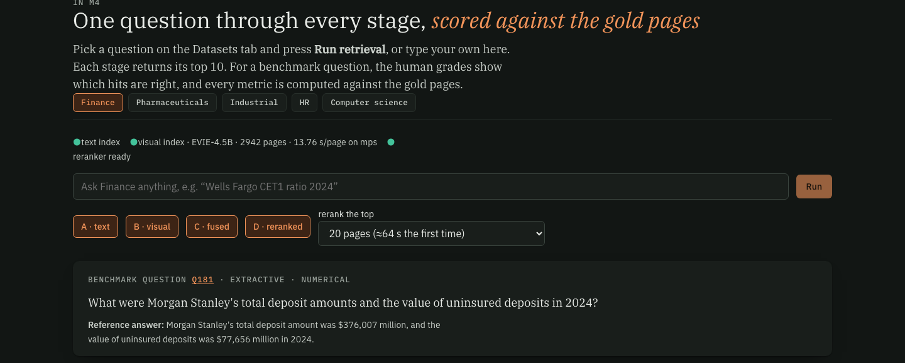
Where each stage put each right page
- One thumbnail per gold page, with its grade, and its rank under A, B, C and D. Green = in the top 10.
- For q181 the full-answer page goes #7 → #3 → #4 → #1. The part-answer page goes #29 → #5 → #11 → #3: fusion pushes it out of the top 10 and the reranker brings it back.
- Coverage at a glance, including pages no stage found ("—").
GoldStrip in pages/Pipeline.tsx.
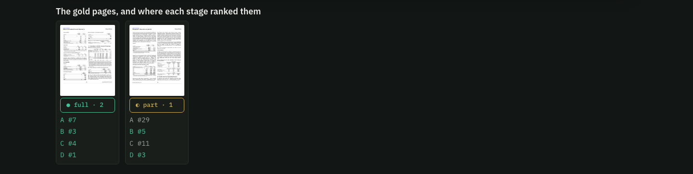
Every retrieval metric, per stage
- NDCG@10 (the leaderboard's metric), Recall@1/5/10/50/100, Complete@10/50 (every gold page found), Full-answer hit@5/10, Precision@5/10, MRR, first gold and first full-answer rank, MAP@10, and each stage's latency.
- Each row says what it measures in plain words.
- One function computes these here and in M3's runs, and its NDCG@10, MAP@10, Recall@5/100, Precision@10 and MRR are checked against
pytrec_eval(the standard TREC scorer) in the tests.
MetricsTable in pages/Pipeline.tsx; maths in src/vidore_loop/eval/metrics.py (report).
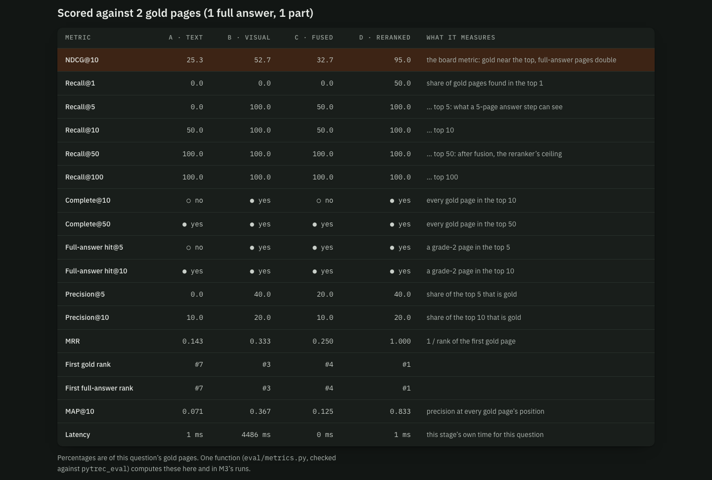
Each stage's top 10, side by side
- Every hit shows its rank, a thumbnail, document and page, and its grade: full · 2 part · 1 not gold.
- Text and fused hits list the question words BM25 matched on the page. q181's top keyword hits are other banks' deposit tables: they match "deposits" and "uninsured" but not Morgan Stanley.
- The reranker's header says how many pages it scored now vs read from its cache.
Try: turn a stage off with its toggle; the columns, the table and the gold strip all follow.
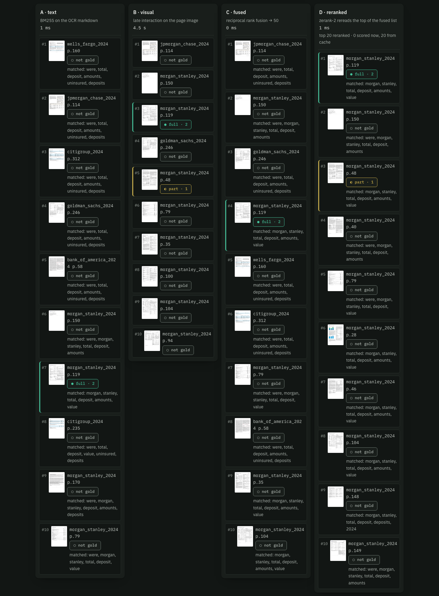
Gold pages gained and lost
- Which gold pages entered or left the top 10 at each step, by corpus id.
- q181: fusion lost page 2225 (the part-answer page) that visual had in its top 10; the reranker won it back.
Deltas in pages/Pipeline.tsx; computed in retrieval/pipeline.py.
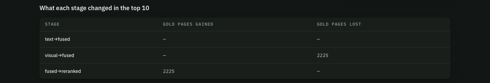
Why it ranked where it did, and the page itself
- Click any hit or gold thumbnail: its rank in every stage, the question words found on the page, and whether it's gold.
- Below, the page large, with the annotators' boxes. Here, Morgan Stanley's 10-K p.119, the box around the Deposits table: total 376,007, not FDIC-insured 77,656.
WhyRanked + PageView.
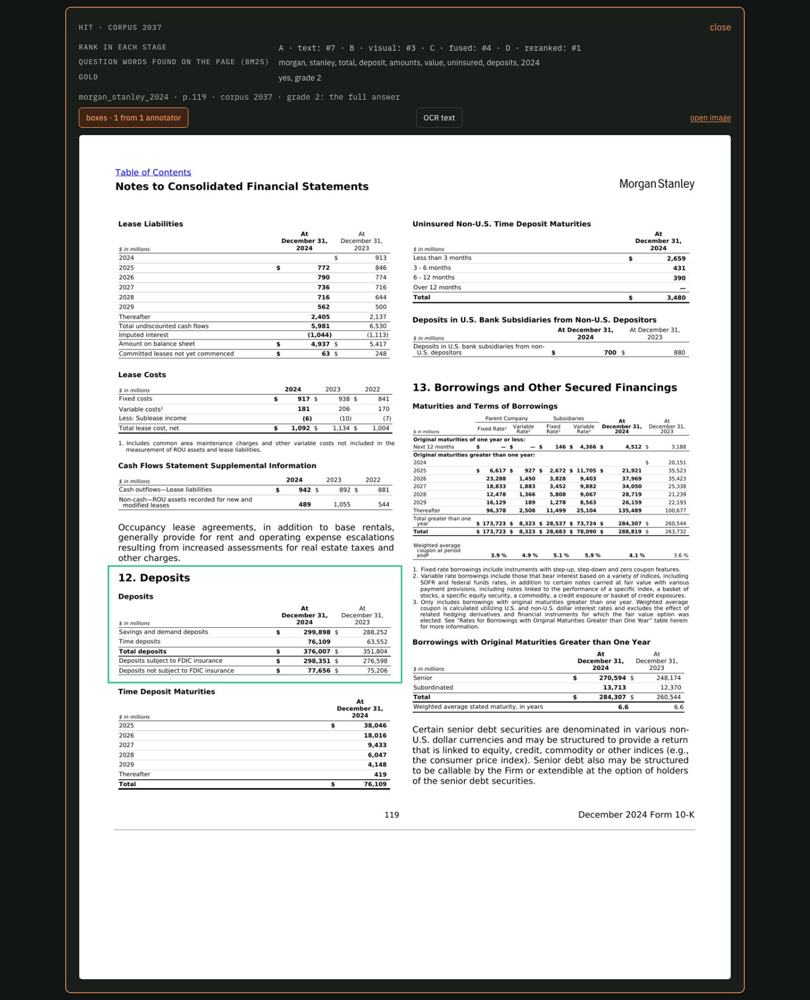
Free-text search, no gold
/pipeline?dataset=finance_en&q=…open live ↗- Type anything in the box and press Run. With no gold pages there's no strip and no metrics: you judge the hits.
- "Wells Fargo CET1 ratio 2024": keyword search mixes in Citigroup and JPMorgan pages; visual's top 7 are all Wells Fargo; the reranker settles on Wells Fargo p.137 and p.139.
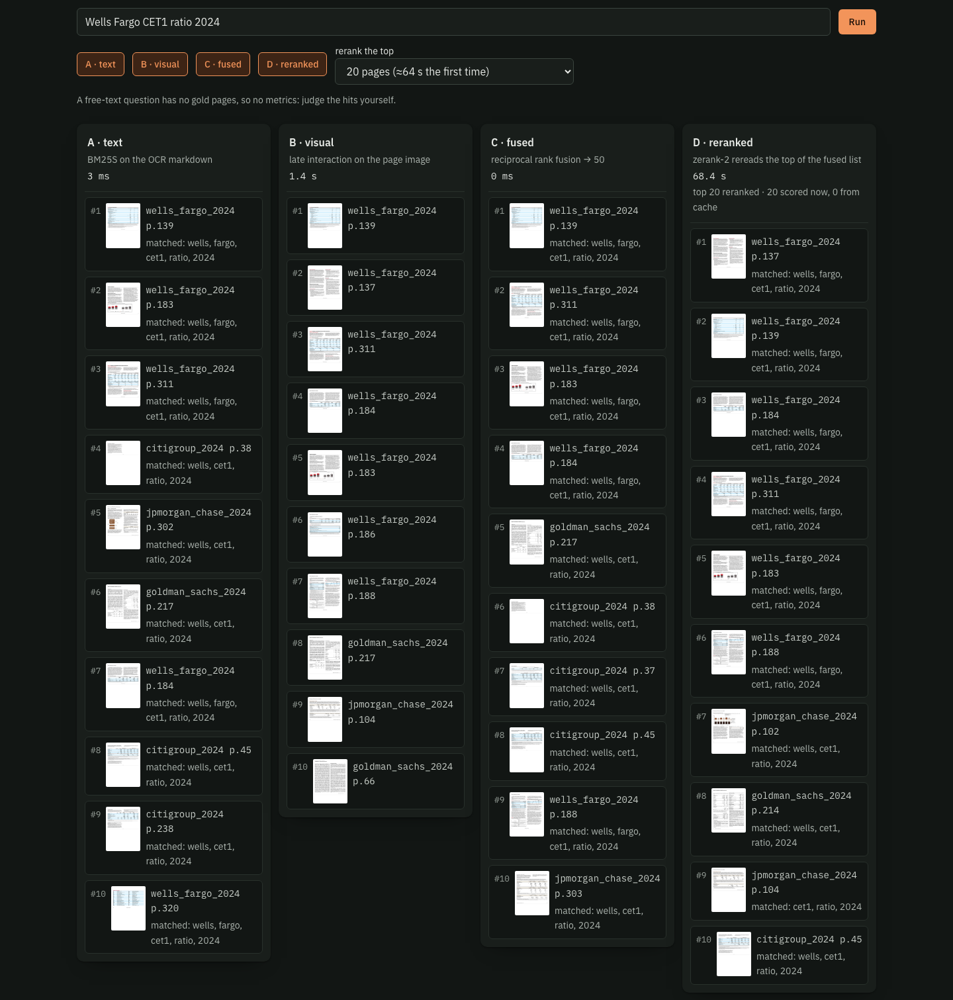
Where the field is
/leaderboardopen live ↗- The ViDoRe pipeline board (best: an agentic retriever at 74.6 mean, 75.9 on finance) and MTEB's single-model board on English queries.
- A glossary of the "kind" column: visual / text, LI (late interaction), dense, + reranker, + LLM agent.
- Our own row arrives in M3, scored on our split.
pages/Leaderboard.tsx; data in docs/research/.
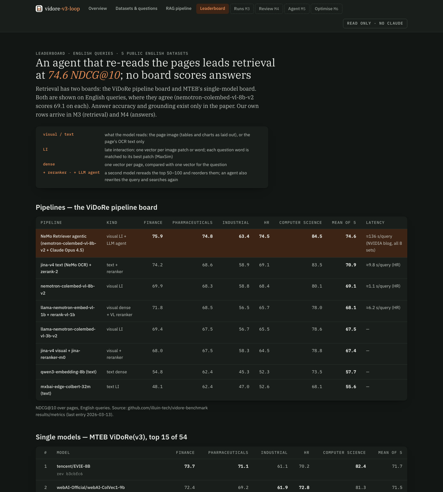
What the stages do, question by question
Rank of the first full-answer page, and NDCG@10, at each stage. Measured today at rerank depth 20.
| Question | A · text | B · visual | C · fused | D · reranked | What it shows |
|---|---|---|---|---|---|
| q181 MS deposits | #7 · 25.3 | #3 · 52.7 | #4 · 32.7 | #1 · 95.0 | keyword search matches other banks' deposit tables; the reranker reads the page and fixes it |
| q17 BofA preferred | #19 · 0.0 | #1 · 100 | #5 · 23.7 | #1 · 61.3 | visual is perfect; fusion drops one gold page to #50, below the reranker's top 20, so it never comes back |
| q142 MS revenue chart | #11 · 0.0 | #2 · 63.1 | #5 · 38.7 | #2 · 63.1 | a chart question: the words aren't in the OCR, the picture is |
All 309 English finance questions
The viewer scores one question at a time. This is every question at once, run from a script this morning (no reranker: at ≈3 s a page that's hours on this Mac). These are the test questions, so they're reported, never tuned on.
| Stage | NDCG@10 | Recall@10 | Recall@50 | Full-answer in top 10 | All gold in top 50 | MRR |
|---|---|---|---|---|---|---|
| A · keyword (BM25) | 50.2 | 56.9% | 80.9% | 58.6% | 59.9% | 0.60 |
| B · visual (EVIE) | 72.9 | 76.1% | 91.7% | 68.3% | 77.0% | 0.84 |
| C · fused (RRF, equal weights) | 64.4 | 70.0% | 89.8% | 66.0% | 72.5% | 0.74 |
The finding to carry into M3. Equal-weight fusion lets the weaker keyword list pull visual down by 8.5 points, and q17 shows the mechanism. Weighting the channels, fusing deeper, or reranking more of the pool should recover it; that gets tuned on a train/dev split, not on these 309.
So you know what you're not looking at
In the viewer now
- All 5 English datasets: questions, answers, evidence pages, human boxes, OCR
- Finance: keyword index, complete visual index, reranker with a score cache
- Per-question metrics against gold, per stage; free-text search
- The leaderboard, with a glossary
Not yet
- Answers: no model writes an answer yet (M4). The pipeline stops at the retrieved pages.
- Runs: whole-dataset scores and our leaderboard row (M3); the table above is a script, not a tab.
- Other datasets' indexes: pharma, industrial, HR and CS have no search index yet, so the pipeline tab shows a "build it" note for them.
- Not committed: today's Overview fix, the viewer's GPU lock, and these pages.
Mark each stop
Pick a verdict per stop and add a note where something's off. Nothing is sent until you press the button; I'll answer every stop you mark.